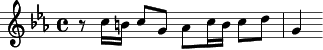
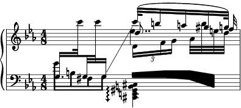

LilyPond prints beautiful sheet music. It produces music notation from
a description file. It excels at typesetting classical music, but you
can also print pop-songs.
LilyPond input is plain text. So, you can use your favorite text
editor to enter it, you can put it in mail or embed it in an article
like this:
\key c \minor r8 c16 b c8 g as c16 b c8 d | g,4
Or you can use it to print music from other programs, using one of the
various input filters.

LilyPond output looks beautiful. The font and the layout algorithms
were inspired by engraved music, so you can expect that same clear and
elegant look from your LilyPond output. And if anything is not to your
liking, you can tweak almost everything.
LilyPond is free software. It is part of the GNU Project. It is
licensed under GNU General Public License, so you can use, modify and
redistribute the program with almost no restrictions.

Keep in touch
info-lilypond@gnu.org
is a low-volume list for information on the GNU Music project.
This list is moderated; ask
David R. Linn or
Han-Wen to send announcements for this
list.
Searchable archives are available from
http://www.mail-archive.co
m/info-lilypond@gnu.org.